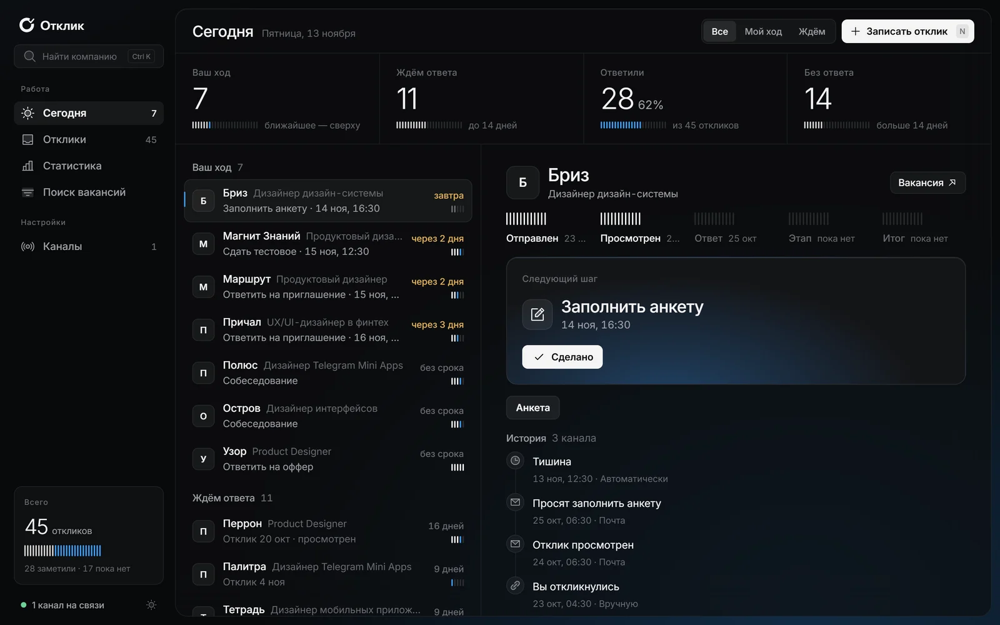
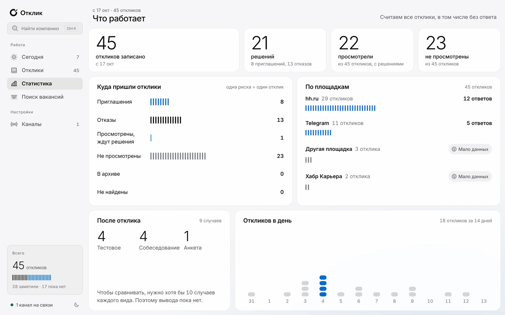
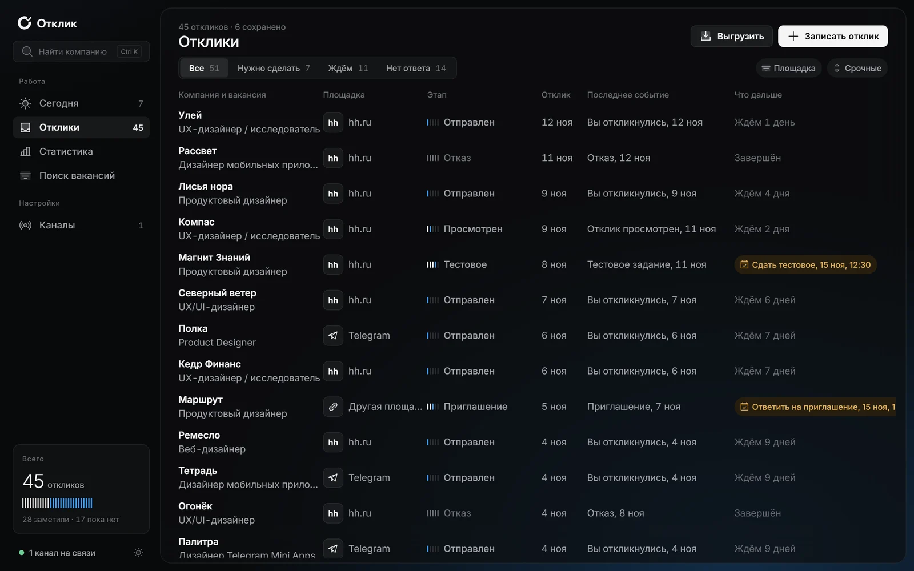
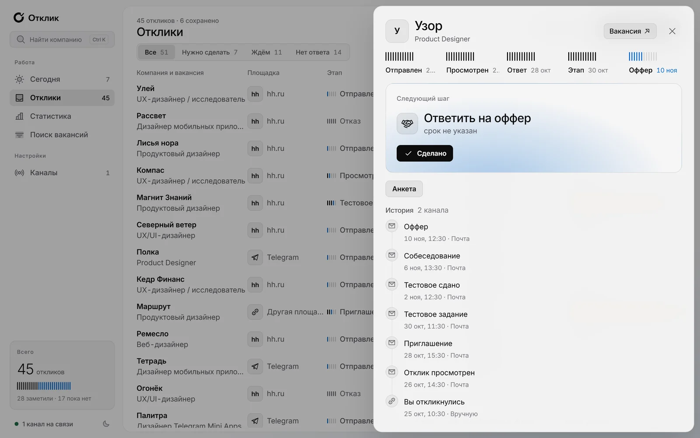

Кейс · ОткликCase study · Otklik
Трекер поиска работы, который говорит, чей сейчас ходA job-search tracker that tells you whose move it is
Свой продукт от идеи до работающего бота: исследование, дизайн-система, Telegram Mini App и веб в двух темах. И проверка спроса, которую я не стал подгонять под желаемый ответ.My own product from idea to a working bot: research, a design system, a Telegram Mini App and a web app in two themes. And a demand check I did not bend toward the answer I wanted.

На всех экранах — выдуманные компании и данные. Реальные отклики в кейс не попали.All screens show made-up companies and data. No real applications are in this case.
Задача и итогProblem and result
01- ЗадачаProblemИщу работу сам: за месяц больше 150 откликов на hh, в Telegram-каналах и напрямую. Ответы приходят в почту, в чат площадки, в личку — и теряются. Пропущенное приглашение стоит дороже любого отказа.I am job hunting myself: over 150 applications in a month on hh, in Telegram channels and directly. Replies land in email, the job board chat, DMs — and get lost. A missed invite costs more than any rejection.
- РешениеSolutionБот принимает вакансию одним «Поделиться» из приложения hh, сам ставит сроки и отмечает тишину. Главный экран отвечает на один вопрос: что сделать мне, а чего ждать от них.The bot takes a vacancy with one “Share” from the hh app, sets deadlines and flags silence on its own. The main screen answers one question: what I need to do, and what I am waiting for.
- ИтогResultРаботающий бот, Mini App и веб, которыми пользуюсь каждый день. Макеты в Figma: дизайн-система, 25 экранов в светлой и тёмной теме, онбординг и пустые состояния.A working bot, Mini App and web app I use every day. Figma: a design system, 25 screens in light and dark, onboarding and empty states.
- Чему научилWhat it taught meДанные собственного использования показали, что ручной ввод — главный барьер, а hh сам показывает статусы откликов. Поэтому продукт не запущен на всех: сначала проверка спроса, потом сервер и реклама.My own usage data showed manual entry is the main barrier, and hh already shows application statuses. So the product is not open to everyone: demand check first, servers and ads later.
ПродуктThe product
02



Mini App внутри Telegram: ищут работу с телефона, поэтому мобильная версия — основная, а не урезанная.The Mini App lives inside Telegram: people job hunt on their phones, so mobile is the main version, not a cut-down one.
Ключевые решенияKey decisions
03- Telegram, а не расширениеTelegram, not an extensionИщут работу в приложении hh на телефоне, а там расширения браузера не работают. «Поделиться» в бот есть в любом приложении.People job hunt in the hh phone app, where browser extensions do not exist. “Share” to a bot works from any app.
- Чей ход — главная осьWhose move is the main axisНе двенадцать статусов, а две группы: что делать мне и чего ждать от них. Статус — деталь внутри карточки.Not twelve statuses but two groups: what I do and what I wait for. The status is a detail inside the card.
- Осознанные границыDeliberate limitsБез автооткликов, массового парсинга и паролей от hh. Имена и личные контакты рекрутеров вырезаются при записи, по формулировкам 152-ФЗ; данные компаний сохраняются.No auto-applying, no mass scraping, no hh passwords. Recruiters’ names and personal contacts are stripped on write, following Russian data law; company details are kept.
- Честная статистикаHonest statsОтклики без ответа считаются наравне с остальными, иначе воронка врёт. Выводов на маленьких числах нет — только метка.Unanswered applications count like the rest, or the funnel lies. No conclusions on small numbers — just a tag.